01រូបជើង · What they look likeជើង «ត»
«ក្តាម» crab។ «ត» បន្ថយទំហំនៅក្រោម «ក» អាន k-dam ព្យាង្គតែមួយ។
ក្តាម “crab”: a tiny ត under ក — one beat, not two.
Subscript consonants · មេរៀនទី ៥ · Lesson 5 of ភាសាខ្មែរ កម្រិត ១
ជើងអក្សរជាព្យញ្ជនៈតូចដែលនៅក្រោម (ឬខាងឆ្វេង) ព្យញ្ជនៈធំ។ ពាក្យទាំងមូលអានជាព្យាង្គតែមួយ។
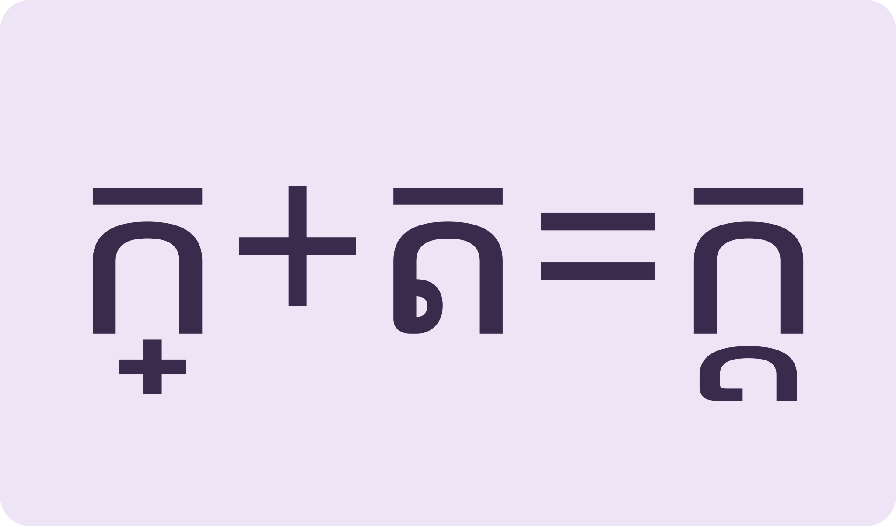
ជើងនៅក្រោមThe small letter sits below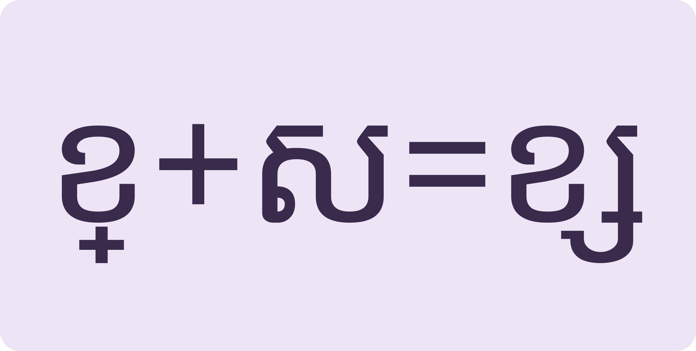
ជើង «ស» នៅឆ្វេងThe ្ស form hides on the left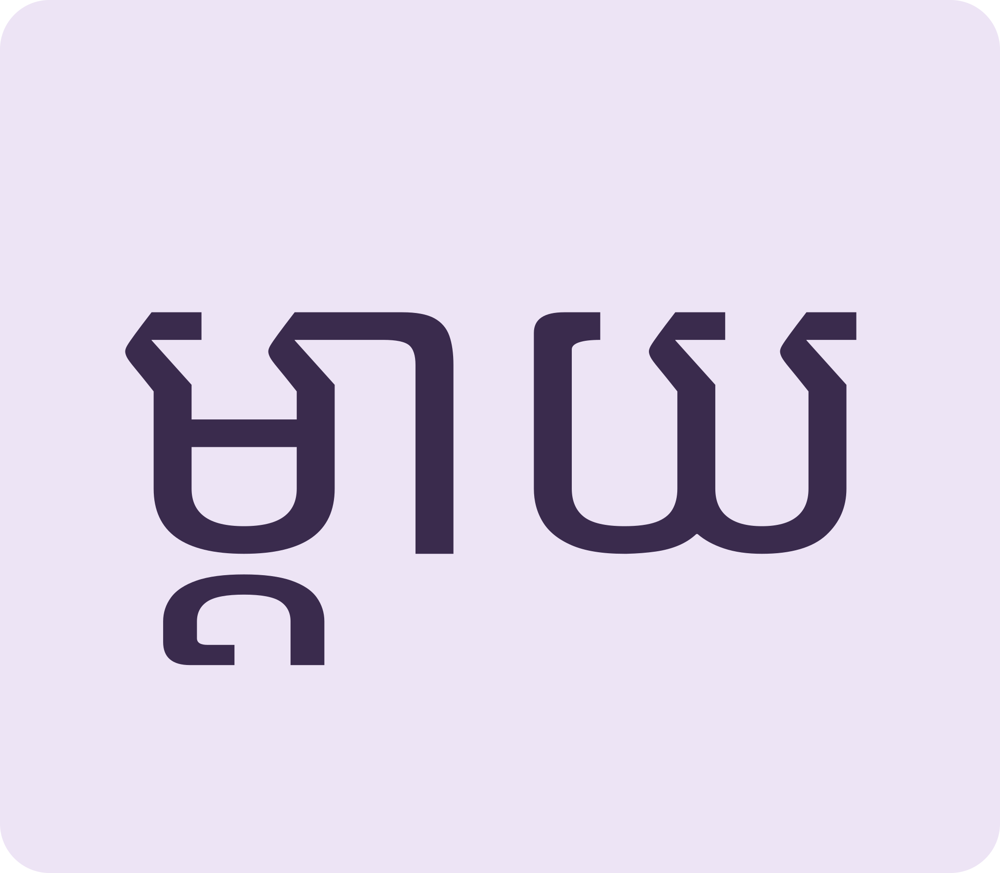
ពីរអក្សរ ព្យាង្គតែមួយTwo consonants, one beatSee the small forms, read words that use them, then read why some learners missed school.
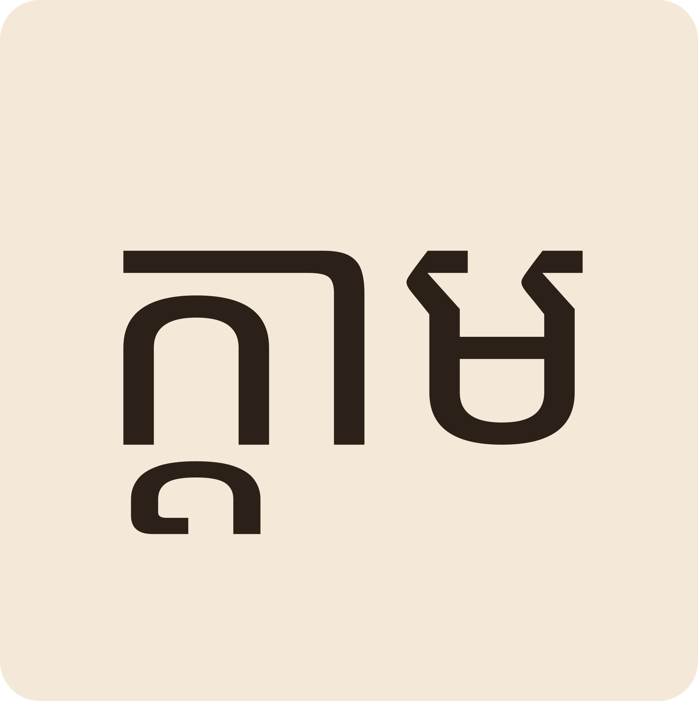
Space listen · ← → move · K show text
«ក្តាម» crab។ «ត» បន្ថយទំហំនៅក្រោម «ក» អាន k-dam ព្យាង្គតែមួយ។
ក្តាម “crab”: a tiny ត under ក — one beat, not two.
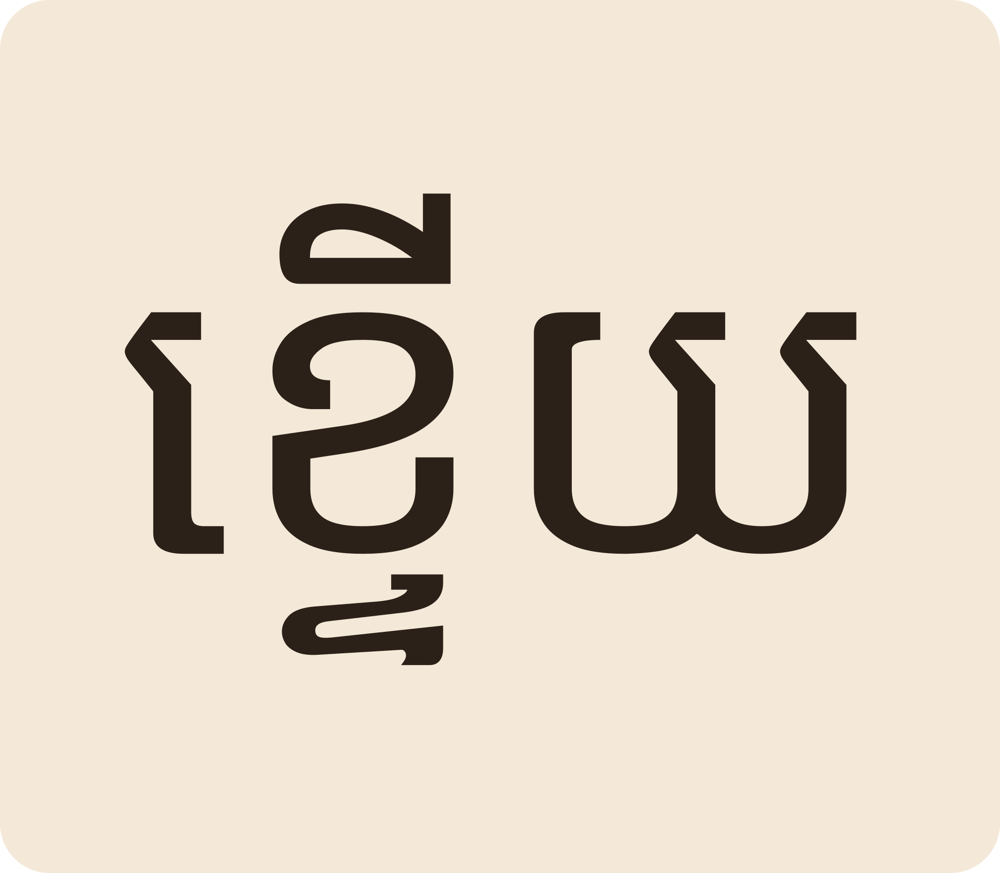
«ខ្ទើយ» crocodile។ កុំច្រឡំជាមួយ «ក្តាម»។
ខ្ទើយ “crocodile” — don't mix it up with ក្តាម.
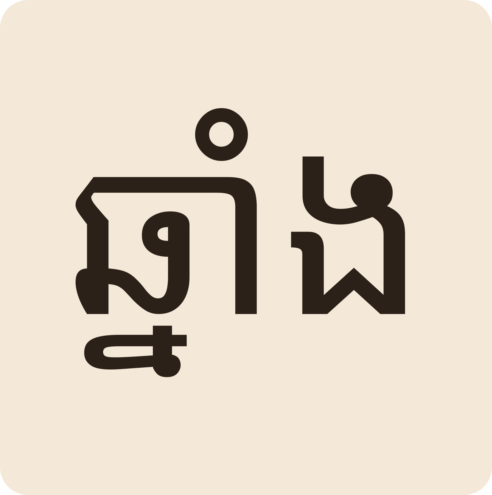
«ឆ្នាំង» clay pot។ មីងឆាំប្រើឆ្នាំងផ្អិនអាហារល្អ។
ឆ្នាំង “clay pot”. Mum Cham cooks well with her pots.
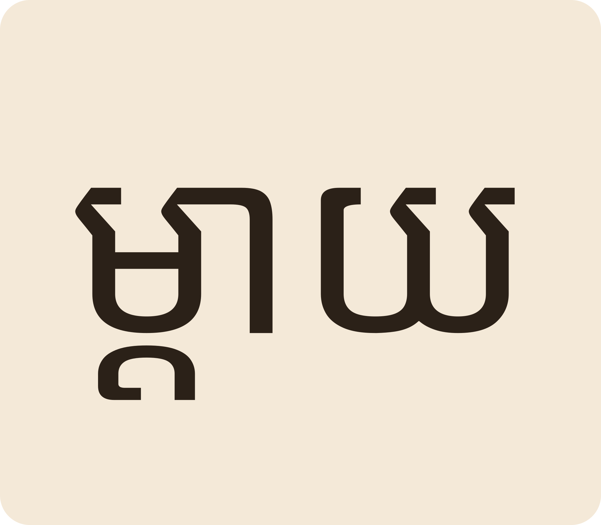
«ម្តាយ» mother។ ពាក្យគ្រួសារភាគច្រើនមានជើងអក្សរ។
ម្តាយ “mother” — most family words carry a subscript.
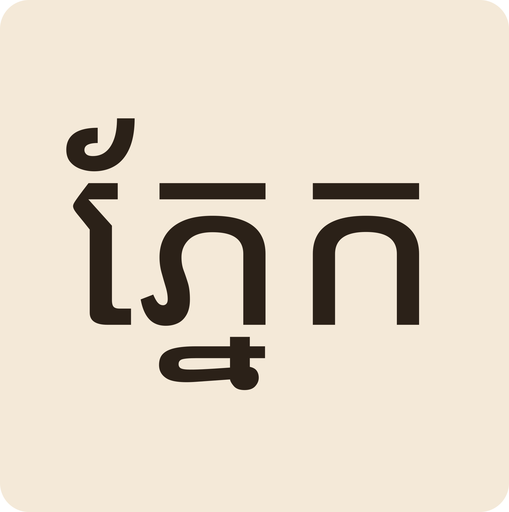
«ភ្នែក» eye។ «ទ» បាត់ខ្លួននៅក្រោម «ភ»។
ភ្នែក “eye” — the ទ vanishes under the ភ.
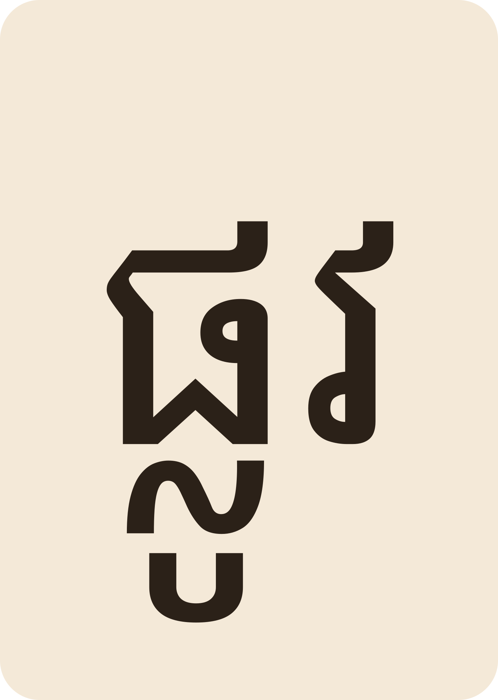
«ផ្លូវ» road។ ផ្ទះពូពៅនៅខាងត្បូងស្រែក្បែរភ្នំ។
ផ្លូវ “road”. Pu Pov's house is south of the rice field by the hill.
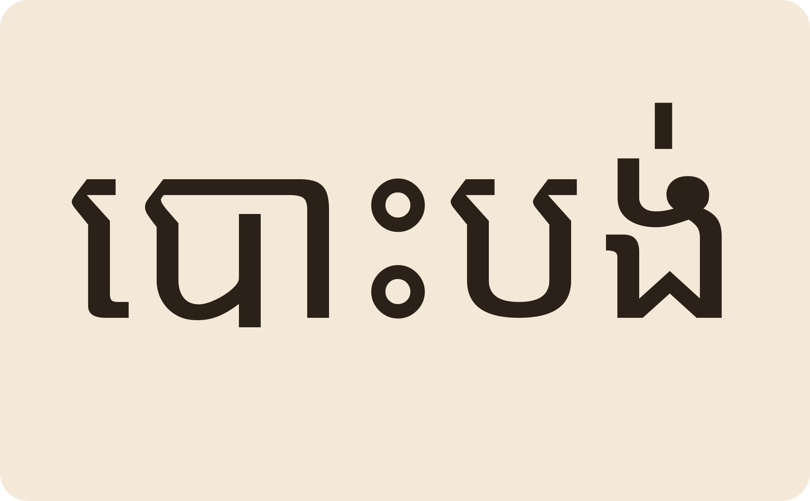
សម្បត្តិបានបោះបង់ការសិក្សាតាំងពីតូច ព្រោះត្រូវជួយឪពុកម្តាយធ្វើការ។
Sambot dropped out of school young to help her parents work.
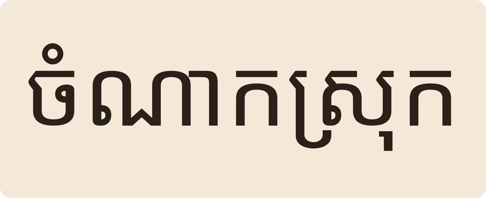
នាងបាននាំកូនធ្វើចំណាកស្រុកទៅធ្វើកម្មករនៅទីប្រជុំជន។
She took her children to migrate for work in a town.
ទេ។ ជើងអក្សរធ្វើឱ្យព្យញ្ជនៈទាំងពីរចូលព្យាង្គតែមួយ៖ «ក្តាម» kdam។
No — the subscript merges both consonants into ONE beat: “kdam”.
នេះជាចំណុចខុសគ្នារវាង ពាក្យពីរព្យាង្គ (មេរៀន ៣) និងពាក្យមានជើង។
«្ស» នៅខាងឆ្វេងព្យញ្ជនៈធំ ដូចជា «ស្រែ» និង «ខ្សត់»។
្ស sits to the LEFT of the main letter: ស្រែ rice field, ខ្សត់ poor.
«ជ្រូក» ជើង «រ» «ឆ្នាំង» ជើង «ន»។
ជ្រូក pig has រ; ឆ្នាំង pot has ន.
ព្រោះមិនបានចូលរៀន បោះបង់ការសិក្សា ជួបការលំបាក ឬចំណាកស្រុក។
Missed school, dropped out, hardship, or migrating for work.
«ការ» នាំមុខប្តូរកិរិយាសព្ទឱ្យទៅជានាម៖ សិក្សា to study, ការសិក្សា the studying / education។
ការ in front turns the verb into a noun: study → education.
Tap a word's play button to hear it. Hide one side, then recall it before you tap to check.
«ក្តាម» crab។ «ត» បន្ថយទំហំនៅក្រោម «ក» អាន k-dam ព្យាង្គតែមួយ។ «ខ្ទើយ» crocodile។ កុំច្រឡំជាមួយ «ក្តាម»។
ក្តាម “crab”: a tiny ត under ក — one beat, not two. ខ្ទើយ “crocodile” — don't mix it up with ក្តាម.
«ឆ្នាំង» clay pot។ មីងឆាំប្រើឆ្នាំងផ្អិនអាហារល្អ។ «ម្តាយ» mother។ ពាក្យគ្រួសារភាគច្រើនមានជើងអក្សរ។ «ភ្នែក» eye។ «ទ» បាត់ខ្លួននៅក្រោម «ភ»។ «ផ្លូវ» road។ ផ្ទះពូពៅនៅខាងត្បូងស្រែក្បែរភ្នំ។
ឆ្នាំង “clay pot”. Mum Cham cooks well with her pots. ម្តាយ “mother” — most family words carry a subscript. ភ្នែក “eye” — the ទ vanishes under the ភ. ផ្លូវ “road”. Pu Pov's house is south of the rice field by the hill.
សម្បត្តិបានបោះបង់ការសិក្សាតាំងពីតូច ព្រោះត្រូវជួយឪពុកម្តាយធ្វើការ។ នាងបាននាំកូនធ្វើចំណាកស្រុកទៅធ្វើកម្មករនៅទីប្រជុំជន។
Sambot dropped out of school young to help her parents work. She took her children to migrate for work in a town.
Q. «ក្តាម» អាន «ក-តាម» ពីរព្យាង្គទេ?
Q. Is ក្តាម read as two beats, kaa-daam?
A. ទេ។ ជើងអក្សរធ្វើឱ្យព្យញ្ជនៈទាំងពីរចូលព្យាង្គតែមួយ៖ «ក្តាម» kdam។
A. No — the subscript merges both consonants into ONE beat: “kdam”.
Q. «ស» ធ្លាក់ជើងនៅឯណា?
Q. Where does subscript ស go?
A. «្ស» នៅខាងឆ្វេងព្យញ្ជនៈធំ ដូចជា «ស្រែ» និង «ខ្សត់»។
A. ្ស sits to the LEFT of the main letter: ស្រែ rice field, ខ្សត់ poor.
Q. «ជ្រូក» និង «ឆ្នាំង» មានជើងអ្វី?
Q. Which subscripts are in ជ្រូក and ឆ្នាំង?
A. «ជ្រូក» ជើង «រ» «ឆ្នាំង» ជើង «ន»។
A. ជ្រូក pig has រ; ឆ្នាំង pot has ន.
Q. ហេតុអ្វីបានជាមនុស្សធំខ្លះមិនចេះអក្សរ?
Q. Why did some adults never learn to read?
A. ព្រោះមិនបានចូលរៀន បោះបង់ការសិក្សា ជួបការលំបាក ឬចំណាកស្រុក។
A. Missed school, dropped out, hardship, or migrating for work.
Q. «សិក្សា» និង «ការសិក្សា» ខុសគ្នាយ៉ាងណា?
Q. Difference between សិក្សា and ការសិក្សា?
A. «ការ» នាំមុខប្តូរកិរិយាសព្ទឱ្យទៅជានាម៖ សិក្សា to study, ការសិក្សា the studying / education។
A. ការ in front turns the verb into a noun: study → education.
ខ្ញុំកំពុងរៀនអាន។
I am learning to read.
សូមអភ័យទោស ខ្ញុំអានមិនសូវចេះ។
Sorry, I can't read well yet.
Say it in your head first, then tap the box to check.